请关闭系统自动更新
xposed:扫码下载
西瓜服务：扫码下载
支付宝：扫码下载
微信：扫码下载
安装上述软件并关闭手机系统软件自动更新
1.打开xp 点击模块安装
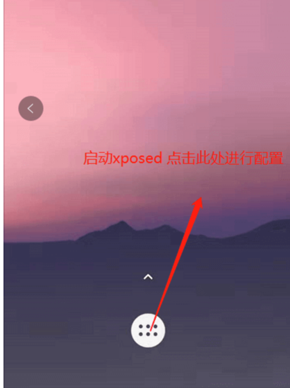
2.进入设置模块点击添加应用
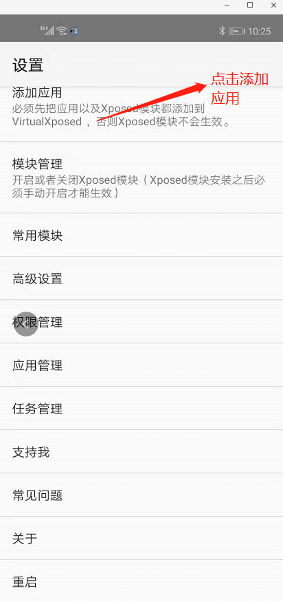 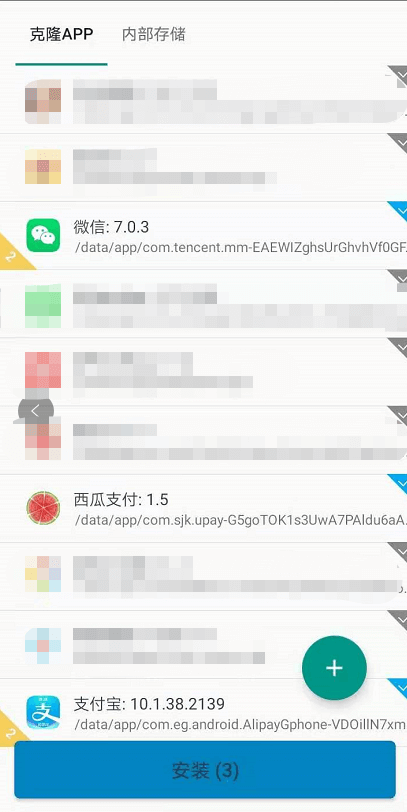
3.回到设置页面点击模块管理，勾选西瓜服务然后重启xposed
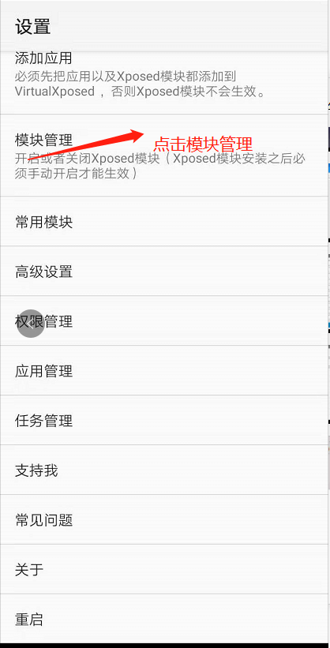 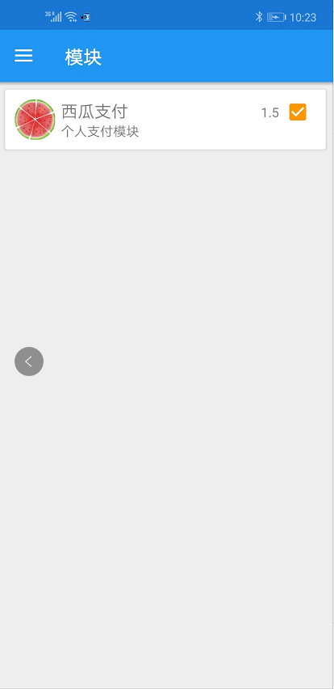 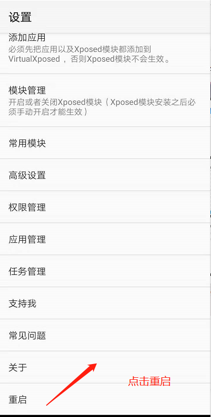
5.回到xposed首页，上滑进入应用管理，注意微信支付宝及西瓜服务均需要在xposed里面启动。不要在你的桌面上启动应用
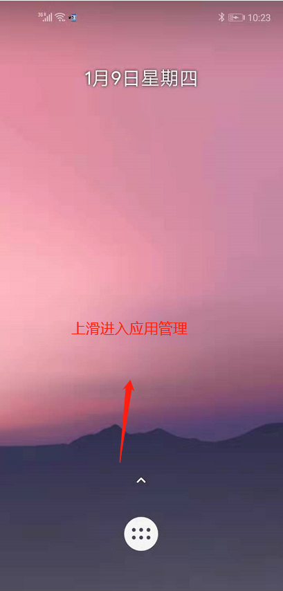 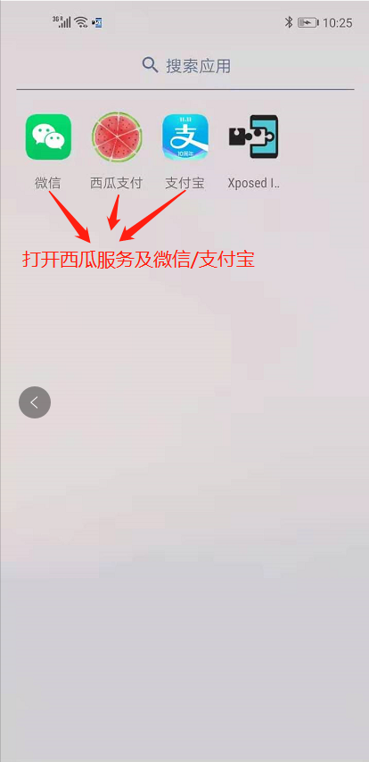
6.在后台添加设备，获取token
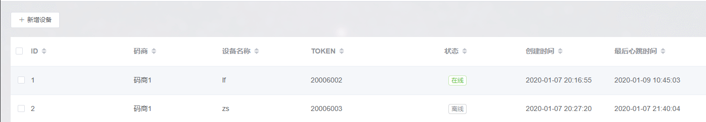
7.配置西瓜服务并启动，后台即可看到设备在线
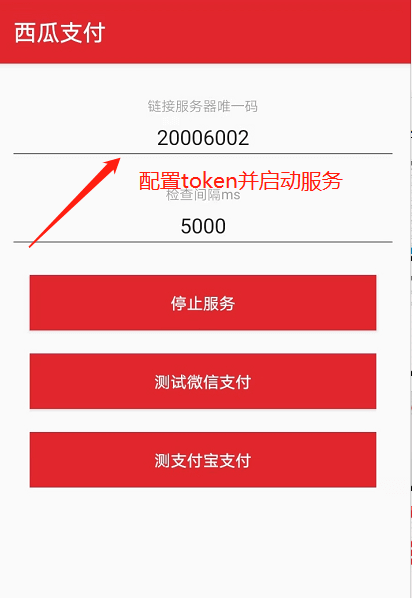
8.点击测试支付宝/微信，能够进行收款界面然后闪回到微信/支付宝的首页，则表明可以正常监控
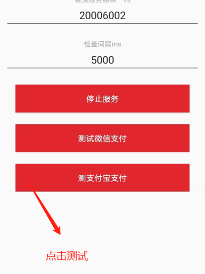
9.在微信/支付宝内点击收款，任意金额如0.01，然后用另一个手机扫码支付。支付成功以后，后台的自动监控账号管理里面即可看到新的收款账号列表。
注意此时的收款二维码并没有，请选择对应的账号，输入该账号的收款码并启用。到此环境配置完成
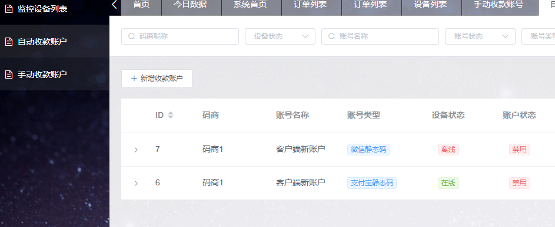
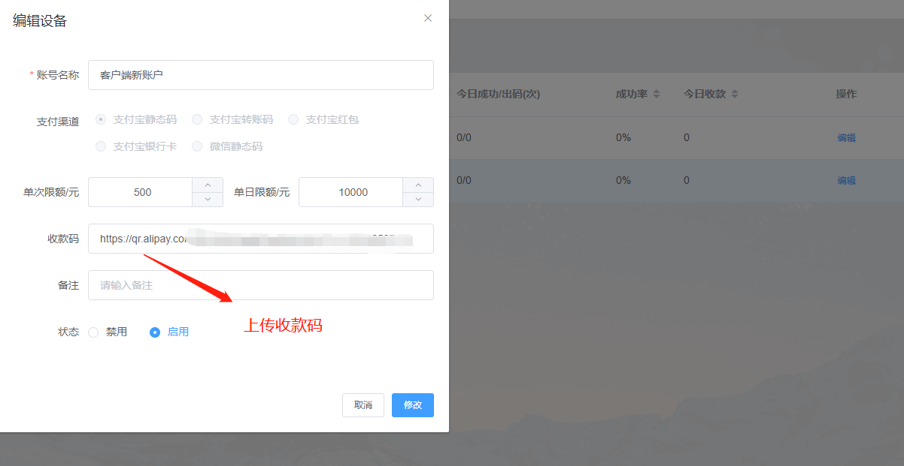